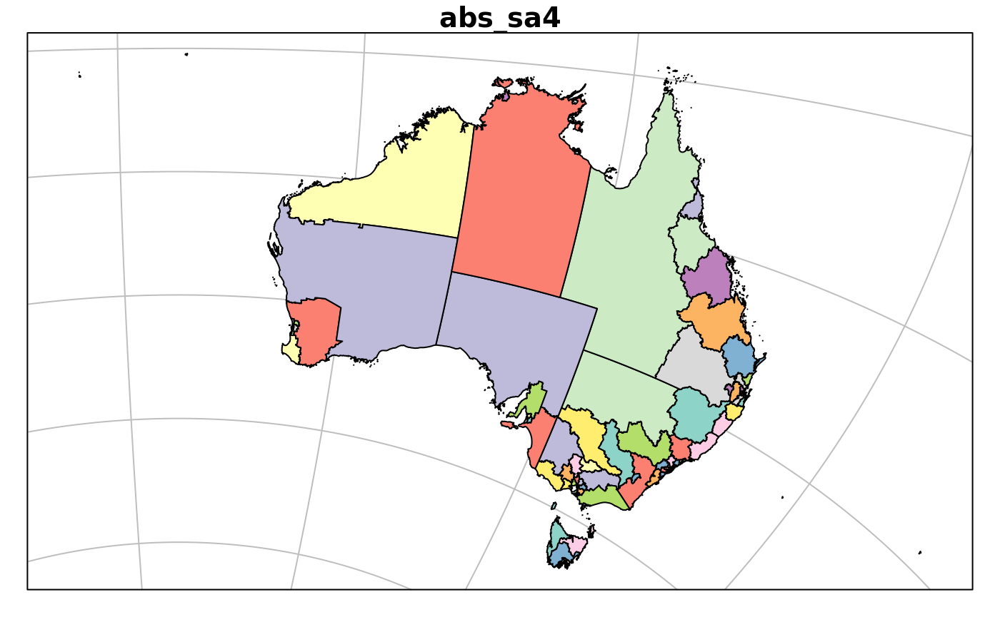

The goal of ozmaps.data is to provide reasonably detailed data sets for various spatial subdivisions of Australia.
Example
Here we plot each available data set with a few variations using various packages.
LCC <- "+proj=lcc +lon_0=130 +lat_0=-20 +lat_1=-43 +lat_2=-10 +datum=WGS84"
library(ozmaps.data)
library(sf)
#> Linking to GEOS 3.6.2, GDAL 2.2.3, PROJ 4.9.3
library(ggplot2)
plot(abs_ced, main = "Commonwealth Electoral Divisions")plot(st_transform(abs_gccsa, LCC), main = "Greater Capital City Statistical Areas", graticule = TRUE)
ggplot(abs_ireg, aes(fill = NAME)) + geom_sf() + guides(fill = FALSE) + coord_sf(crs = 3577) + ggtitle("Indigenous Regions (EPSG:3577)")
## tmap with localized Local Government Area plus inset map for the state
library(tmap)
kbb <- st_bbox(dplyr::filter(abs_lga, stringr::str_detect(NAME, "Kingborough")))
k_lga <- abs_lga[unlist(st_intersects(st_as_sfc(kbb), abs_lga)), ]
#> although coordinates are longitude/latitude, st_intersects assumes that they are planar
kmap <- tm_shape(k_lga, bbox = kbb) +
tm_polygons(col = "NAME")
library(grid)
kmap
#> Legend labels were too wide. The labels have been resized to 0.38, 0.25, 0.34, 0.45, 0.30, 0.29. Increase legend.width (argument of tm_layout) to make the legend wider and therefore the labels larger.
tasmap <- tm_shape(abs_ste %>% dplyr::filter(NAME == "Tasmania")) +
tm_polygons(col = "NAME", legend.show = FALSE)
kregion <- tm_shape(st_as_sfc(kbb)) +
tm_borders(lwd = 1)
print(tasmap + kregion, vp = viewport(0.85, 0.27, width = 0.3, height = 0.5))




Please note that the ‘ozmaps.data’ project is released with a Contributor Code of Conduct. By contributing to this project, you agree to abide by its terms.